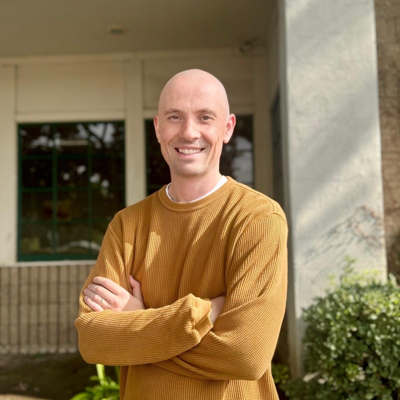
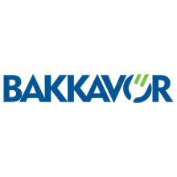
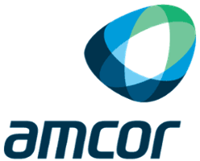

I lead complex, cross-functional programs, warehouse and distribution operations, and continuous improvement initiatives — building the KPI frameworks, governance routines, and teams that deliver multi-site, multi-million-dollar initiatives on time and on budget. This page is the short version of my resume, with a quick video introduction below.
Most capacity problems are process problems. I fix the flow first — order-to-cash, inventory allocation, 3PL handoffs — before I ask for more people. Lean Six Sigma isn't a certification on a wall, it's how I diagnose a bottleneck.
P&L ownership means the finance team, the warehouse floor, and the executive team are looking at the same numbers. I build reporting people believe, so decisions don't stall on "whose data is right."
Teams do their best work when expectations are clear and feedback is direct. I run operations the way I'd want to be managed — honest about gaps, generous with context, and quick to fix what isn't working.


Strategic partner to the President, owning end-to-end operations, program governance, and North American distribution for a $5.5M manufacturing and distribution entity.
Led West Coast operations through a period of exponential growth and multi-site transformation, managing 8–12 direct reports with functional responsibility for a workforce of up to 350 employees, while aligning cross-functional stakeholders to deliver major programs for Tier-1 national retail accounts.
Managed a team of 12 direct reports, with functional responsibility for a broader production workforce of approximately 80 employees.
Early exposure to Lean methodology — mapping value streams to identify process inefficiencies, the starting point for the continuous-improvement work that's run through every role since.
Multi-site program execution, scope/timeline/cost ownership, budget & resource management.
Distribution network management, warehouse optimization, inventory reduction.
Lean Six Sigma (Green Belt), root cause analysis.
KPI design & tracking.
ERP implementation (Odoo), organizational redesign, cross-functional process standardization.
Cross-functional team alignment, executive advisory, team development & mentoring.
P&L management, cost discipline, margin optimization.
Microsoft Office Suite (Excel, PowerPoint, Word, Outlook), Microsoft Project — daily use.
Plus B.A. International Business Management and Lean Six Sigma Green Belt certification.
Rode San Francisco to Los Angeles end to end, and currently working my way through cycling the entire West Coast, one stretch at a time.
A regular on the course — the same patience for a bad lie as I have for a bad quarter.
Avid English football fan. I'll happily talk tactics, table position, or transfer window drama any time of year.